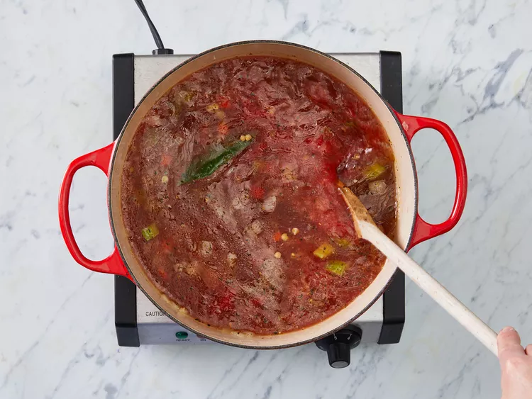

Lentil Soup

Description
Hearty lentil soup, chock full of veggies and very yummy. Serve with warm cornbread.
What could be more comforting than a bowl of lentil soup on a chilly afternoon? Crushed tomatoes, garlic, and a vegetable medley combine with lentils and fragrant herbs for an unforgettably delicious and hearty soup that the whole family will love. Add this classic soup recipe to your rotation and enjoy stick-to-your-ribs flavor any time.
Ingredients
- ¼ cup olive oil
- 1 onion, chopped
- 2 carrots, diced
- 2 stalks celery, chopped
- 2 cloves garlic, minced
- 1 bay leaf
- 1 teaspoon dried oregano
- 1 teaspoon dried basil
- 2 cups dry lentils
- 8 cups water
- 1 (14.5 ounce) can crushed tomatoes
- 1/2 cup spinach, rinsed and thily sliced
- 2 tablespoons vinegar
- salt to taste
- ground black pepper to taste
Steps
- Heat oil in a large soup pot over medium heat. Add onions, carrots, and celery; cook and stir until onion is tender, 3 to 5 minutes.
- Stir in garlic, bay leaf, oregano, and basil; cook for 2 minutes.
- Stir in lentils, and add water and tomatoes. Bring to a boil. Reduce heat and let simmer until lentils are tender, at least 1 hour.

- When ready to serve, stir in spinach and cook until it wilts.
- Stir in vinegar and season with salt and pepper; taste and adjust as needed.
- Serve hot and enjoy!